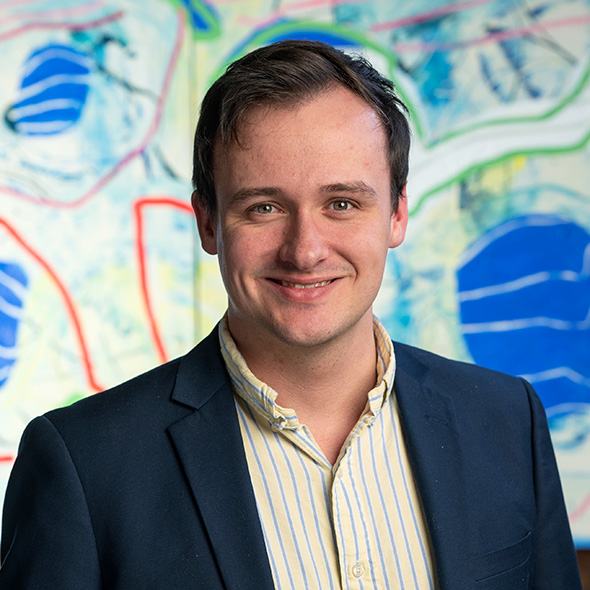

I build the tools that take paperwork off skilled people: intake, document drafting, requests and follow-ups, and reporting. They connect to the systems you already use.
I learned how inside a large regional law firm, where I ran growth and led the team that built its in-house software. Now I do it for other firms.

requests sent automatically in four months
production services built for one firm
provinces of rules, forms and offices covered
a month in advertising managed, so I know what a client costs to win
Every new client brings forms, letters, requests to third parties, follow-ups and reports. Most of it is done by hand, copied between a practice-management system, email, a fax machine and someone’s spreadsheet.
So you hire another assistant. Then another. Meanwhile requests slip, follow-ups never go out, and files sit waiting on something nobody chased.
I’ve seen it from the inside, and I’ve built the software that fixed it.
Type a request in plain language. The system picks the right recipient, forms and signatures, sends it by email, fax or mail, then follows up on its own until the answer arrives.
AI reads long files such as records, contracts and statements and drafts summaries and timelines. Every line links back to the page it came from.
Letters, forms, filings and reports in your house style, ready for a professional to review and sign.
Incoming email, faxes and uploads are named, matched to the right client file, made searchable and tagged, with no manual sorting.
I get your data out of the vendor, connect the systems you’re keeping, and build what’s missing.
Practice management, accounting, Microsoft 365, Teams, phone and fax, working together instead of being re-typed between them.
Law firmsInsurance and claims teamsClinics and health administrationAccounting and advisory practicesAny firm where skilled people lose hours to paperwork
Built with a second developer as part of a 29-service platform designed to replace the firm’s case-management software.
Most recently I was Director of Growth at a large regional law firm operating in four Atlantic provinces. I ran about $600K a month in advertising, led a seven-person team across growth and technology, and led the build of the firm’s in-house software platform.
That’s why the software I build starts from how a firm actually makes money, not from a list of features. I trained as a journalist at Carleton, which is mostly why I start every project by asking a lot of questions.
Call me at 902-403-4993
Tell me where your team is losing time, and I’ll tell you honestly whether software will fix it. You can also email john@johnmacgillis.ca or find me on LinkedIn.